가림 영상을 더 보여 주면,
AI 는 가려진 물체를 기억할까
- 질문
- 물체가 가려졌다 다시 나오는 영상을 영상 예측 AI 에 더 학습시키면, "가려져도 물체는 그대로 있다" 를 더 잘 알게 되나?
- 답
- 학습에 안 쓴 합성 시험 (VOBench) 에서는 확실히 좋아졌다. 장면이 복잡한 공개 시험 (IntPhys2) 과 실제 촬영 영상에서는 좋아지지 않았다.
- 다음
- 같은 학습을 두 번 더 돌려 결과가 반복되는지 확인하고, 복잡한 장면에서 왜 안 되는지를 학습 없이 먼저 쪼개 본다.
가려진 물체를 "없어졌다" 고 보는 문제
물체 영속은 물체가 가려져 안 보여도 그 자리에 계속 있다는 것을 아는 능력이다. 사람은 아기 때 배운다.
V-JEPA 2 는 Meta 가 공개한 영상 예측 AI 다. 영상 앞부분을 보고 뒷부분이 어떨지 예측한다. 픽셀을 그리지 않고, 영상을 요약한 내부 표현을 예측한다.
이 모델은 물체가 가림막 뒤로 들어가는 순간에 영상이 끊기면 대개 "물체가 사라진 미래" 를 더 자연스럽다고 본다. 그런 칸에서 원래 모델의 정답률은 14 % 다 (아래 결과 ②).
그래서 물었다. 가림 장면이 많은 영상으로 더 학습시키면 나아지나? 그리고 학습 때 못 본 종류의 영상에서도 나아지나?
"놀람" 점수로 가능 · 불가능을 가린다
모델이 보는 앞부분
16 장
뒷부분 16 장이
어떨지
실제로 일어날 수 있는 뒷부분 (가려진 물체가 다시 나옴)
물리적으로 말이 안 되는 뒷부분 (물체가 사라짐)
놀람 = 모델의 예측과 실제 뒷부분이 얼마나 다른가. 클수록 모델이 "예상 밖" 이라고 본 것이다.
정답 = 불가능한 미래에서 더 놀라면 맞힌 것이다. 두 영상은 문맥이 픽셀까지 같아, 뒷부분만 다르다. 이런 두 영상을 쌍이라 부른다.
정답률 50 % 는 동전 던지기와 같다. 50 % 아래면 거꾸로, 말이 안 되는 쪽을 더 자연스럽다고 본다는 뜻이다.
학습 데이터만 다른 모델 네 개
모두 원래 모델에서 출발해 같은 시간 (4,000 번 갱신, 클립 25.6 만 개) 동안 더 학습했다. 영상을 요약하는 부분은 고정하고, 예측하는 부분만 학습했다. 정답 라벨은 쓰지 않았다. 영상을 보고 뒷부분을 예측하는 원래 방식 그대로다.
| 모델 | 추가로 본 영상 | 왜 넣었나 |
|---|---|---|
| A | 없음 (원래 공개 모델) | 출발점 |
| B | 일상 영상 (SSv2) 만 | "더 학습한 것만으로" 생기는 변화 |
| C | 일상 영상 반 + 가림 영상 (WROP 가림) 반 | 주인공. 가림 경험의 효과 |
| D | 일상 영상 반 + 가림 없는 물리 영상 (WROP 비영속) 반 | 대조군. C 와 같은 프로그램으로 만든 같은 양의 영상이지만 가림이 핵심이 아니다. C 가 좋아졌을 때 "가림을 배워서" 인지 "합성 화면에 익숙해져서" 인지 가른다 |
무엇을 보여 주며 학습했나
그림은 실제 학습 클립에서 뽑았다. 왼쪽 세 장 = 문맥 (모델이 보는 부분), 오른쪽 세 장 = 맞혀야 하는 뒷부분.
SSv2 · 일상 영상
B · C · D 모두사람이 손으로 물건을 다루는 짧은 영상. 동작 종류가 174 가지다. 원래 모델이 배운 영상과 비슷한 종류라, 일반적인 예측 능력이 무너지지 않게 붙잡는 역할이다.
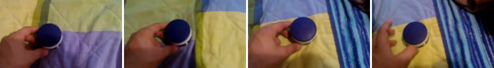
"pushing hand cream from left to right" · 연속 4 장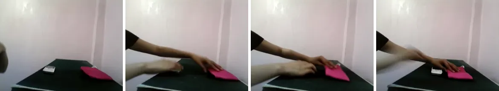
"moving a pouch and a mobile phone closer to each other"WROP 가림 영상
C 만공개 물체 영속 데이터 WROP 중 물체가 가려졌다 다시 보이는 과제들. 카메라 · 조명 · 속도가 매번 무작위로 바뀐다. 뒷부분은 항상 "물체가 그대로 있는" 가능한 미래다.
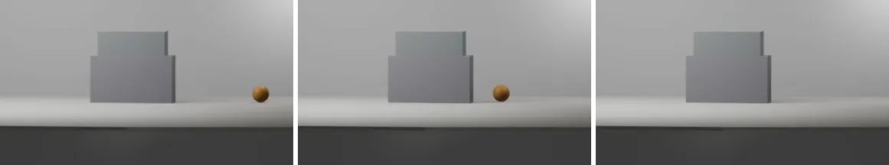
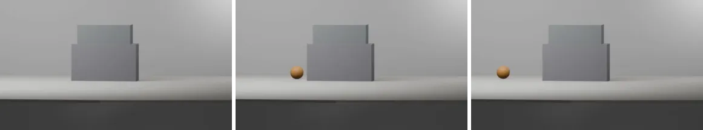
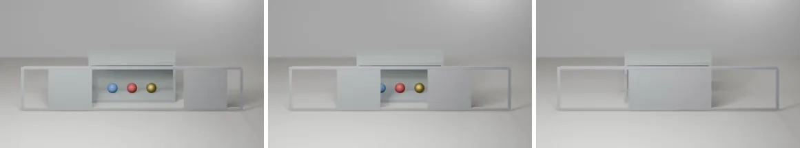
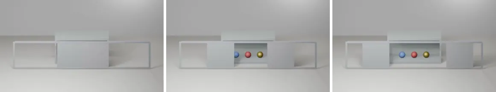
WROP 가림 없는 물리 영상
D 만같은 WROP 안에서 막힘 · 떨어짐 · 충돌 과제. 화면 느낌과 양은 C 의 가림 영상과 같고, 물체가 가려지는 것이 핵심이 아니다.
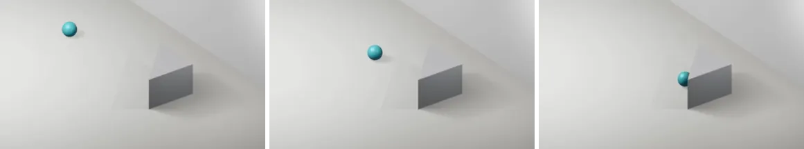
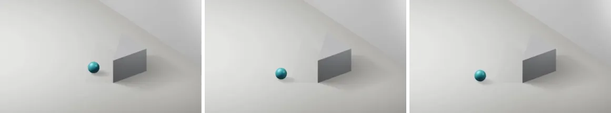
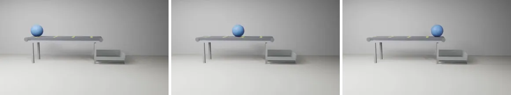
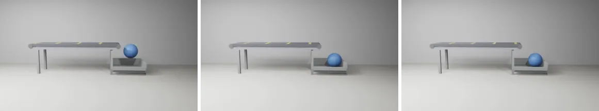
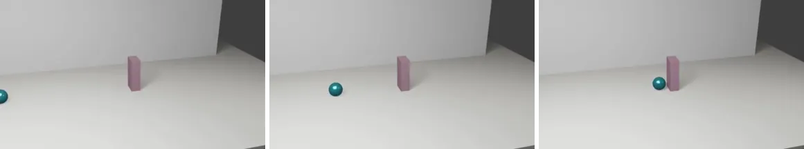
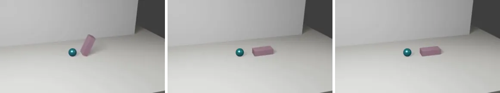
학습에 한 번도 안 쓴 시험 네 가지
각 시험은 문맥이 같은 가능 · 불가능 쌍으로 되어 있다. 그림은 실제 시험 쌍에서 뽑았다.
VOBench · 우리 팀이 Unreal 로 만든 합성 시험
720 쌍 · 위반 종류: 사라짐 · 생김 · 모양 바뀜 · 색 바뀜
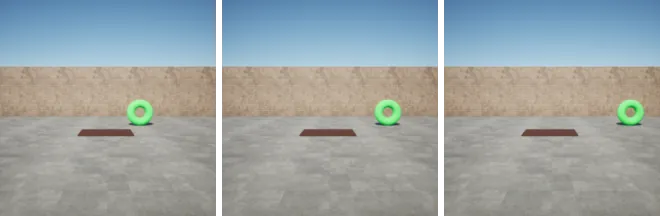
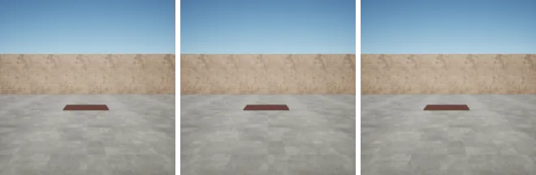
이 예시는 결과 ② 의 칸에서 뽑았다. 가림막이 물체를 가린 채로 문맥이 끝나서, 사라짐이 가림막 뒤에서 일어난다 (VOBench 의 영속 · late 가림).
IntPhys 1 · 공개 합성 시험
180 쌍 · 위반 종류: 사라짐 · 모양 바뀜 · 순간 이동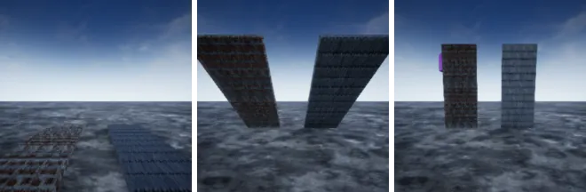
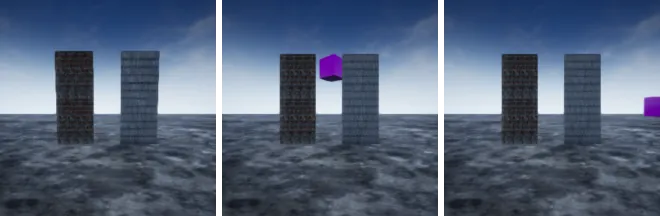
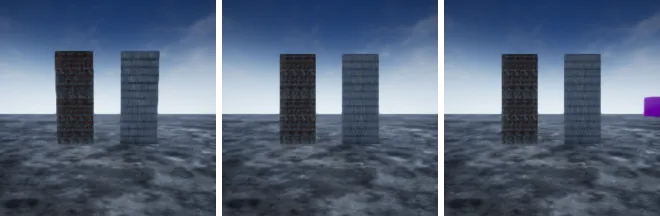
IntPhys 2 · 공개 합성 시험, 장면이 더 복잡하다
500 쌍 · 위반 종류: 사라짐 · 바뀜 · 연속성 · 통과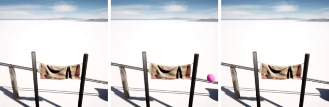
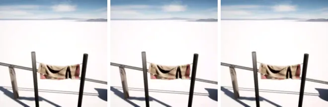
이 시험만 두 영상의 문맥이 픽셀까지 같지는 않다 (원래 데이터가 그렇게 만들어졌다).
실제 영상 시험 · 직접 찍은 영상
40 쌍 · 위반 종류: 사라짐 · 생김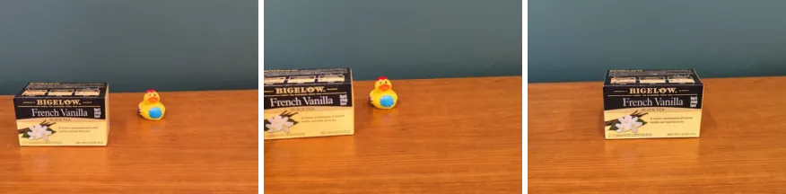
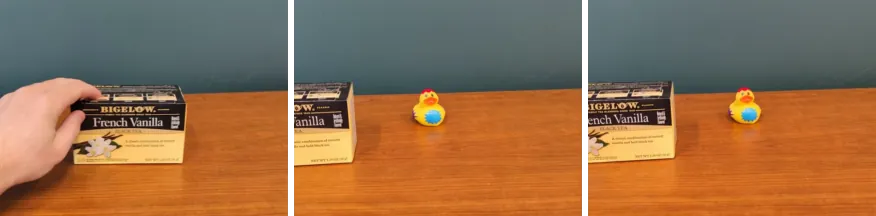
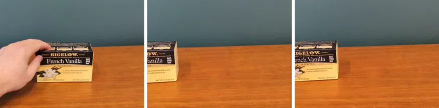
불가능 영상은 물체가 완전히 가려진 순간부터 물체 없이 찍은 영상으로 이어 붙여 만들었다.
정답률 (%)
아래 "C 만 맞힘 대 D 만 맞힘" 은 같은 쌍에서 한 모델만 맞힌 개수다. 정답률 두 개를 따로 비교하는 것보다 차이를 예민하게 잡는다. "확실" 은 이 차이가 우연으로 나올 확률이 5 % 미만이라는 뜻이다 (McNemar 검정).
① VOBench · 가려진 물체가 사라지는 위반
문맥에 물체가 있는 쌍 360 개② VOBench · 원래 모델이 가장 못 하는 칸
영속 · late 가림 · 사라짐 위반 36 쌍. VOBench 24 칸 중 원래 모델 최저 (다음 낮은 칸 55.6)③ IntPhys 1
180 쌍④ IntPhys 2
500 쌍⑤ 실제 영상
40 쌍확실한 것과 한계
가림 영상으로 학습하면, 학습에 안 쓴 합성 시험 (VOBench) 에서 "가려진 물체가 사라지면 이상하다" 를 더 잘 잡는다. 학습 영상은 Blender, 시험은 Unreal 로 만들어 화면 모양이 다르다. (결과 ①②)
효과는 "가림" 이라는 내용에서 온다. 같은 프로그램 · 같은 양의 가림 없는 영상 (D) 으로는 좋아지지 않았다 (68.3 → 65.8). 같은 쌍에서 C 만 맞힌 것이 41 개, D 만 맞힌 것이 0 개다. IntPhys 1 에서도 C 가 D 보다 확실히 낫다. (결과 ①②③)
장면이 복잡한 IntPhys 2 와 실제 촬영 영상에서는 어떤 학습도 원래 모델보다 낫지 않았다. 이전에 VOBench 로 직접 학습했을 때와 같은 모습이다. (결과 ④⑤)
한계 1. 각 모델을 한 번씩만 학습했다. 같은 결과가 반복되는지 아직 모른다.
한계 2. 결과 ② 칸의 정답률은 14 % 에서 42 % 로 올랐지만 아직 동전 던지기 (50 %) 아래다.
한계 3. 실제 영상 시험은 40 쌍뿐이라 작은 차이는 보이지 않는다.
무엇을 할까
- 같은 학습을 두 번 더 돌려 결과 ①② 가 반복되는지 본다.
- IntPhys 2 와 실제 영상에서 왜 안 움직이는지, 학습 없이 기존 채점 결과를 물체 크기 · 위반 종류별로 쪼개 본다.
- WROP 생성 프로그램으로 불가능 영상과 빈 장면 영상을 직접 만든다. 학습에서 뺀 가림 종류로 시험하고, "가림막 뒤엔 늘 뭔가 나온다" 는 지름길을 걸러내기 위해서다. Blender 4.4 설치가 필요해 결정을 기다리는 중이다.